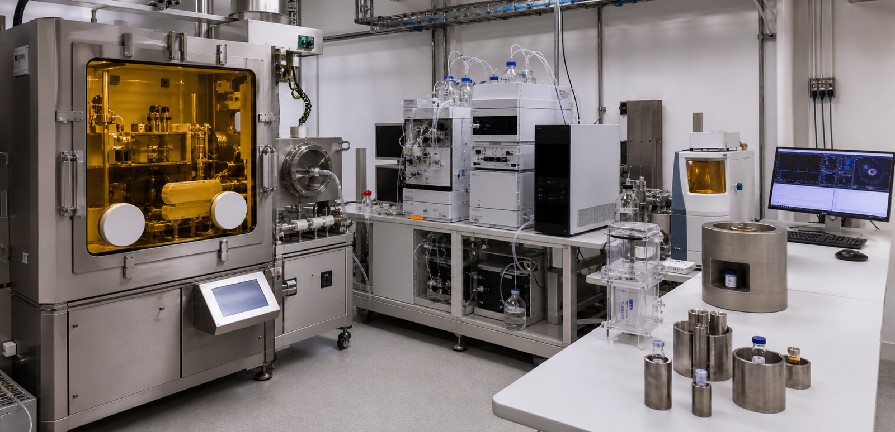
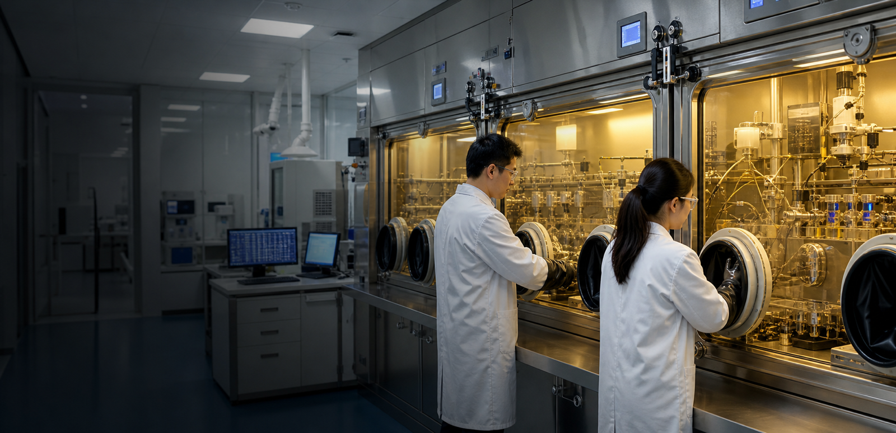

Radiopharmaceutical Science
Innovation in Radiopharmaceuticals: Building the Foundation for Precision Diagnosis, Treatment, and Radionuclide Therapy
Research in radiopharmaceutical science centers on radiopharmaceuticals: pairing radioactive isotopes with precisely designed molecules to visualize disease and deliver targeted radionuclide therapy. Unlike conventional medicines, radiopharmaceuticals can both reveal molecular signatures with PET and deliver radiation to diseased tissue, enabling early classification, individualized treatment, and real-time response monitoring. We advance innovation across five core areas—radionuclide production and radiolabeling chemistry; molecular probe and radiopharmaceutical development; preclinical molecular imaging and in-vivo evaluation; theranostics and internal dosimetry; and clinical translation and nuclear pharmacy. Our work spans oncology, neurodegenerative, and cardiovascular disease, moving promising radiopharmaceuticals from the laboratory toward unmet clinical needs.
Radiopharmaceutical Science Areas
Radionuclide production and radiolabeling chemistry provide the material foundation of every radiopharmaceutical. We develop medical radionuclide production and automated labeling methods with accelerator and hot-cell platforms, establishing efficient, stable synthesis processes for downstream imaging and clinical applications.
Latest News
March 4
Xinhuanet
(Yang Ya) Recently, the "development and application of ultra-high-resolution PET" national major scientific instruments have produced results...
July
Digital PET Laboratory
imaging technology become a pair of panels, a helmet, or a scanner rebuilt around a living plant...
September 5
Science and Technology Daily
the reporter learned from the official website of the State Drug Administration that the first domestic all-digital PET for brain (ie, DigitMI i30) has been approved for three types of me...
Featured Projects
NSFC Fund for Distinguished Young Scholars
Digital PET Imaging
Digital PET imaging platforms deliver precise digitization for massive parallel channels and high-speed scintillation signal streams to achieve high-fidelity quantitative molecular measurement for nuclear medicine and particle physics experiments.
NSFC Original Exploration Program Project
All-Digital Silicon Photomultiplier with High Sensitivity and High Count Rate
High-sensitivity, high-throughput all-digital SiPM integrated circuits resolve overlapping scintillation signals under intense irradiation for high-rate PET and radiation detection environments.
NSFC National Major Scientific Research Instrument
Development Project
Observation Device for Energy Transport of Proton Beams in Biological Tissues
Custom proton beam measurement instruments quantify beam energy deposition within biological tissues to enable real-time dosimetry monitoring and optimized proton therapy treatment planning.
NSFC Major International (Regional) Joint Research
Project
Flat-panel PET Imaging
Flat-panel PET detection hardware expands molecular imaging workflows for intraoperative, preclinical small-animal and portable bedside scanning unavailable to conventional ring PET systems.
Advancing Our Research
Featured Publications
A novel iterative iso-transmission line empirical material decomposition algorithm for multi-energy photon-counting CT
Jan 01
Biomedical Signal Processing and Control,
99, 2025, 106853. doi:10.1016/j.bspc.2024.106853.
Performance Evaluation of New PET/CT DigitMI 930
Jan 09
IEEE Transactions on Radiation and Plasma
Medical Sciences, vol. 9, no. 5, pp. 578-585, May 2025, doi:
10.1109/TRPMS.2025.3526659.
Investigation of a Dual-Panel In-Beam PET Based on Digital Detectors for Proton Therapy Monitoring With Different Monitoring Strategies: A Simulation Study
Jan 30
IEEE Transactions on Radiation and Plasma
Medical Sciences, vol. 10, no. 4, pp. 582-592, April 2026, doi:
10.1109/TRPMS.2025.3584122.